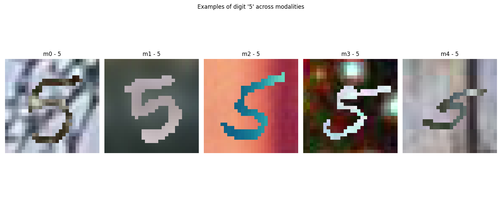
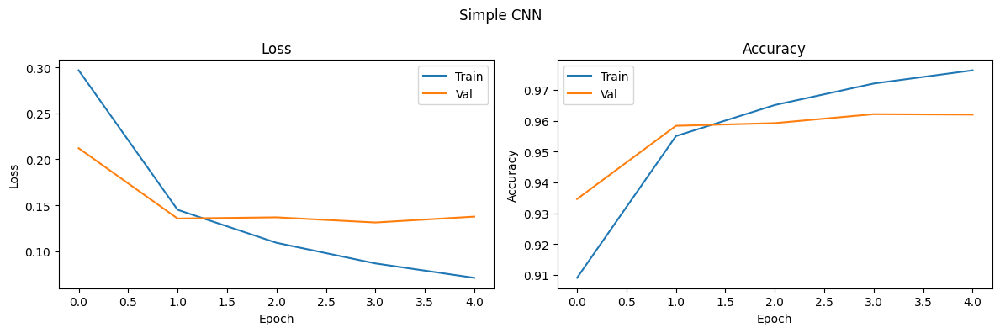
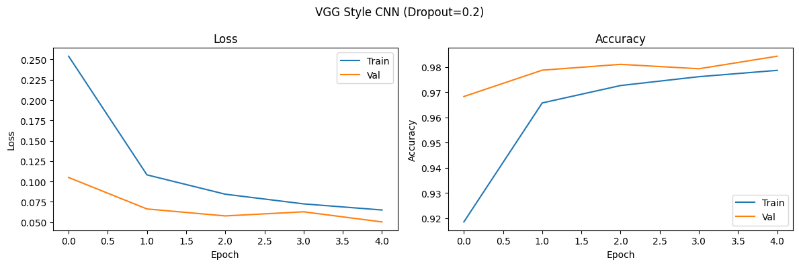
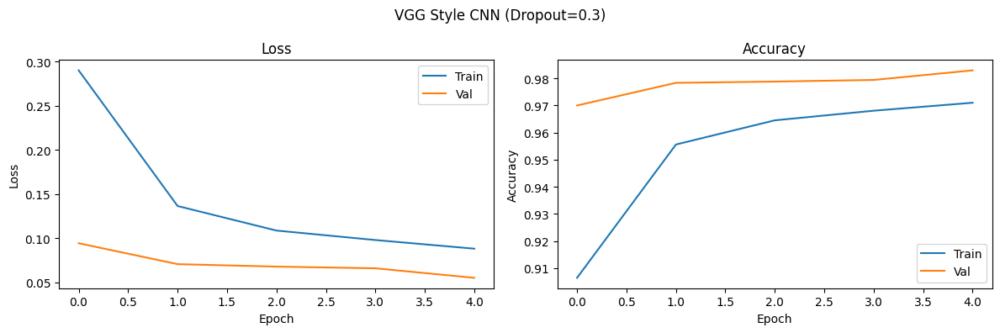
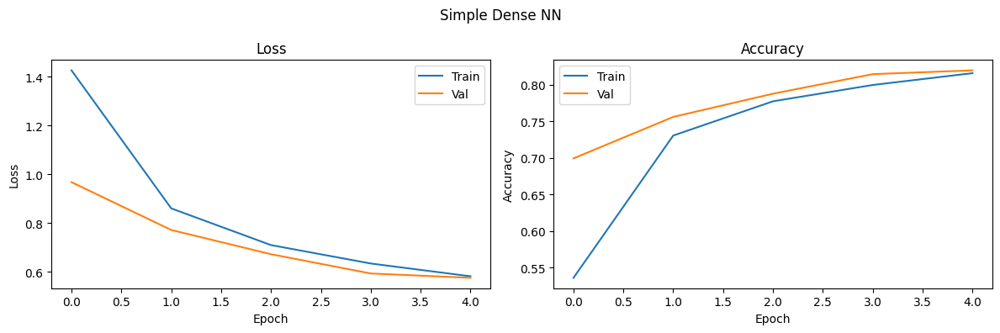
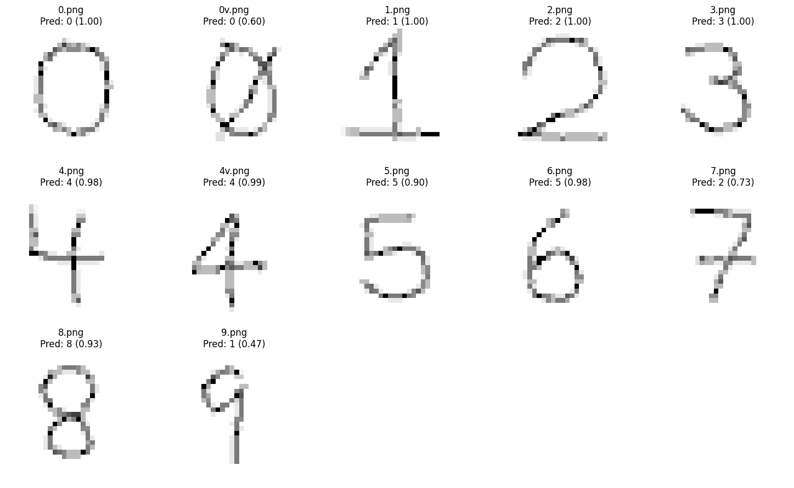

Se seleccionaron imágenes correspondientes al dígito 5 desde cada una de las cinco modalidades disponibles en el conjunto de datos (m0 a m4). Cada modalidad presenta una variación distinta en el fondo, lo cual refleja la intención del dataset de simular distintas condiciones visuales.
La siguiente figura muestra un ejemplo del mismo dígito bajo distintas modalidades:
|
 |
Estas variaciones introducen ruido visual al dígito, representando un reto importante para los modelos de reconocimiento. Es fundamental que los modelos aprendan a identificar el carácter ignorando las diferencias de fondo.
Se analizó la resolución de una muestra aleatoria, obteniendo que todas las imágenes tienen un tamaño de:
(28, 28) píxelesEsto coincide con el tamaño del conjunto MNIST original, lo cual es apropiado para redes convolucionales pequeñas y modelos eficientes.
| Modalidad | Total de imágenes |
|---|---|
| m0 | 60,000 |
| m1 | 60,000 |
| m2 | 60,000 |
| m3 | 60,000 |
| m4 | 60,000 |
El dataset está perfectamente balanceado en cuanto al número total de imágenes por modalidad.
A continuación, se presenta la distribución de imágenes por dígito (0–9) en cada modalidad:
| Dígito | Cantidad |
|---|---|
| 0 | 5923 |
| 1 | 6742 |
| 2 | 5958 |
| 3 | 6131 |
| 4 | 5842 |
| 5 | 5421 |
| 6 | 5918 |
| 7 | 6265 |
| 8 | 5851 |
| 9 | 5949 |
La misma distribución se replica en las modalidades
m1,m2,m3ym4, dado que todas las modalidades comparten los mismos dígitos, pero con diferentes fondos visuales.
Aunque existe una pequeña variación entre las clases (por ejemplo, dígitos como el 1 tienen más instancias que el 5), el conjunto puede considerarse razonablemente balanceado. No es necesario aplicar técnicas de rebalanceo adicionales en esta etapa.
cache() y prefetch(): Aceleró la carga y entrenamiento al aprovechar la memoria y GPU mediante TensorFlow.Se construyeron y entrenaron 3 modelos CNN usando TensorFlow con GPU:
Se utilizó trainAndEvaluate() para graficar pérdida y precisión. Se ajustaron hiperparámetros como dropout, optimizer y learning rate.
|
 |
|
 |
|
 |
Se implementó una red fully connected (densa) con capas Dense y función de activación ReLU. Resultado:
Demuestra menor capacidad para detectar patrones espaciales comparado con CNN.
|
 |
Se entrenó un modelo SVM con kernel RBF:
train/test usando train_test_split.Resultado:
Bajo rendimiento comparado con modelos CNN.
Se aplicaron técnicas de image augmentation como rotación, zoom y desplazamiento para mejorar la generalización. Se observó que el modelo con Dropout=0.2 mostró una ligera mejora en comparación con Dropout=0.3.
Se recolectaron imágenes de prueba escritas a mano por el grupo. Se procesaron con la función loadAndPrepareImages():
Resultado: El modelo logró clasificar correctamente la mayoría de los dígitos manuscritos, con buena confianza (mayor al 90% en la mayoría).
|
 |
| Modelo | Precisión (%) |
|---|---|
| Simple CNN | 94.60 |
| VGG Style CNN (Dropout=0.2) | 94.85 |
| VGG Style CNN (Dropout=0.3) | 94.82 |
| Simple Dense NN | 81.94 |
| SVM (con VGG16) | 39.66 |
Conclusión: El modelo más efectivo fue VGG Style CNN con Dropout de 0.2, por su equilibrio entre precisión y capacidad de generalización. Se comprobó su robustez con imágenes manuscritas reales. El uso de GPU y técnicas como cache, prefetch, y data augmentation permitió acelerar el entrenamiento y mejorar el rendimiento.